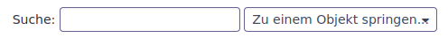
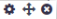
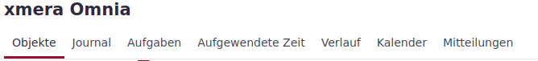
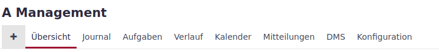
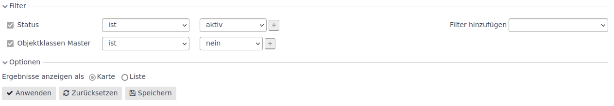
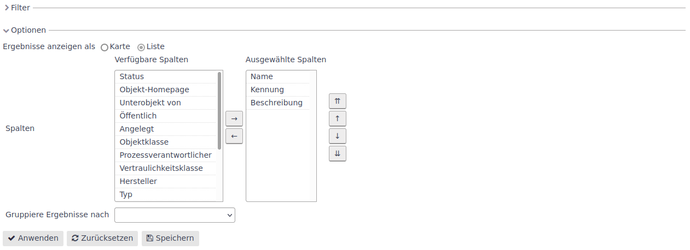
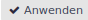
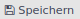
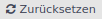
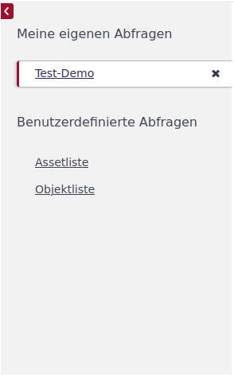

Orientierung
Anmeldung
Mit dem ersten Aufruf werden Sie zur Anmeldung (login) geführt.
Hier tragen Sie Ihre Anmeldedaten für die xmera Omnia Demo ein. Mit Klicken auf Anmelden werden Sie bei Erstanmeldung zunächst gebeten Ihr Passwort zu ändern. Danach gelangen Sie zur Hauptseite.
Hauptseite
Auf der Hauptseite der Demo wird eines der Dashboards angezeigt. Es gibt stets ein System-Dashboard, das für alle Nutzer die selben Inhalte darstellt, aber vom Administrator frei gestaltet werden kann. Neben dem System-Dashboard können beliebig viele weitere Dashboards angelegt werden.
Nachfolgend sehen Sie das Dashboard der ISO 27k Demo.
Die in der jeweiligen Demo angelegten Dashboards können Sie über diese Schaltfläche auswählen:
- Topmenü
-
Das Topmenü (oben links) ist auf allen Seiten eingeblendet und ermöglicht es, mit einem Klick auf die Basisseiten zu springen.
Die Topmenüpunkte sind:
-
Haupseite,
-
Meine Seite,
-
Objekte und
-
DMS.
-
- Benutzermenü
-
Das Benutzermenü ist in der oberen Menüleiste rechts platziert.
Es zeigt von links nach rechts
-
den Namen des angemeldeten Benutzer,
-
die Anzahl der ungelesenen Meldungen, die für den Benutzer vorliegen,
-
einen Zugang zu den persönlichen Einstellungen (Mein Konto),
-
ein Button zum Abmelden des Benutzers.
-
- Suche
-
Der Suchbereich zeigt unterhalb vom Benutzermenü ein Suchfenster und daneben einen Schnellzugang an.
In dem Suchfenster kann ein beliebiger Suchbegriff eingegeben werden. Nach der Bestätigung wird eine Liste der Suchergebnisse angezeigt. Die Suche kann in diesem Fenster auf definierte Objekte eingegrenzt werden.
Klickt man in das Feld Schnellzugriff (Zu einem Objekt springen), wird eine Liste der zuletzt verwendeten Objekte und aller übrigen Objekte angezeigt. Durch einen Klick auf das gewünschte Objekt springt man gleich in das Übersichtsfenster des ausgewählten Objekts.
Meine Seite
Auf Meine Seite kann sich der Benutzer ein Dashboard mit den für ihn wichtigen Informationen zusammenstellen. Über das Feld Hinzufügen kann man verschiedene Blöcke in die Seite integrieren. Diese Blöcke lassen sich wiederum bearbeiten. Bei einem Mouseover wird im oberen rechten Bereich des Blocks eine Bearbeitungsleiste  eingeblendet. Bei Klick auf das Zahnrad (steht nicht bei allen Blöcken zur Auswahl) können Einstellungen am Block vorgenommen werden. Der gekreuzte Pfeil kennzeichnet die Drag & Drop Funktion. Bei gehaltener linker Maustaste kann der Block verschoben werden (siehe Bild unten) und bei Klick auf das Kreuz wird der Block entfernt.
Auf diese Weise kann sich der Benutzer seine Seite gestalten.
Objekte
Unter dem Menüpunkt Objekte befindet sich der Bereich, in dem die Datenbearbeitung erfolgt. In der Demo wird folgendes Fenster angezeigt.
In der Objektübersicht sind die Wurzelobjekte zu sehen. In der Demo werden folgende Wurzelelemente genutzt:
-
A Management:
Abbildung der Prozesse des ISMS-Managementprozess -
B Prozesse & Informationen:
Erfassung und Bewertung der Organisationsprozesse und der Informationen, die für Informationsprozesse benötigt werden -
C Services:
Darstellung zu internen und externen Dienstleistern -
D IT-Betrieb:
Abbildung der IT-Anwendungen, IT-Systeme, Netzwerke -
E Infrastruktur:
Abbildung von Standorten, Gebäuden, Räumen -
F Audit:
Abbildung der internen und externen Audits -
G Changeprozesse:
Abbildung von Projekten im Bereich der Informationsverarbeitung (es könnten aber auch beliebige Projekte sein) -
H Meldungen:
Erfassen und Verarbeiten von Service-Tickets, Störungen und Vorfällen -
I Vorgaben & Regeln
Zentraler Ort für übergreifende Reglungen und Vorgaben der Organisation
Diese Struktur ist demo-spezifisch und sollte an die Erfordernisse der Organisation angepasst werden. Sie ist hier so gewählt, dass sich die einzelnen funktionalen Zusammenhänge eines ISMS mit xmera Omnia gut nachvollziehen lassen.
Von der Objektübersicht kann man durch Klicken auf die Karten in die einzelnen Objekte wechseln.
- Objektmenü
-
Die Objektseiten besitzen im Vergleich zu den anderen Seiten ein zusätzliches Objektmenü. Im Objektmenü, das sich zwischen Hauptmenü und dem Objektnamen (im Basisbild der Demo Objekte) befindet, werden die in diesem Objekt zur Verfügung stehenden Module als Menüelemente dargestellt. Das gerade angezeigte Menüelement ist unterstrichen.
Das Menü der Objektübersichtsseite zeigt, wie im folgenden Bild zu sehen, die Module an, die objektübergreifende Informationen bereitstellen.
Hier kann über den Menüpunkt Objekte immer wieder zur Objektübersicht gesprungen werden.
Ist man in einem spezifischen Objekt, so werden auch hier nur die Module angezeigt, die in dem Objekt aktiviert wurden.
Eine weitere Besonderheit ist, dass zu Beginn des Menüs ein + dargestellt ist, das dem Schnellzugriff dient. Beim Klicken auf das Kreuz erscheint eine Liste von Elementen, bei denen man direkt in die zugehörige Erfassungsmaske springen kann.
- Abfragen
-
Objektseiten, in denen Listen von Objekten oder Aufgaben gelistet werden, haben einen identischen Aufbau. Über der Liste werden die Einstellungen für Filter und (Anzeige-) Optionen dargestellt.
In der Systemeinstellung ist der Filter auf- und die Optionen zugeklappt. Durch Klicken auf den Pfeil neben dem Text können die Elemente auf- oder zugeklappt werden. Der Filter bietet die Möglichkeit nach zahlreichen Attribut-Inhalten zu filtern. Es können Filterelemente hinzugefügt und wieder deaktiviert werden.
Im Bereich der Optionen kann die Darstellung der Liste angepasst werden.
Wird die Ansicht Karte gewählt (siehe Objektübersicht), bestehen keine weiteren Darstellungsvarianten. Bei der Listenanzeige dagegen können die Spaltenattribute ausgewählt werden. Weiter besteht die Möglichkeit die Liste nach einem Attribut zu gruppieren.
Mit Klicken des Button  wird die erstellte Abfrage ausgeführt. Die Abfrage kann auch gespeichert werden. Dies erfolgt über den Button . Mit dem Button  wird der zuletzt gespeicherte Filter wiederhergestellt und ausgeführt.
Die gespeicherten Abfragen können über die linke Seitenleiste, die ggf. über den roten Pfeil ausgeklappt werden muss, ausgewählt werden.
Unter der Überschrift Meine eigenen Abfragen finden sich die selbst erstellten Abfragen wieder. Die Abfragen unter Benutzerdefinierte Abfragen werden durch die Administration zur Verfügung gestellt.
DMS
Das Dokumentenmanagementsystem (DMS) ist das einzige Modul in xmera Omnia, das auch vom Topmenü aus angewählt werden kann. In diesem Fall kann auf alle Dokumente, die im DMS abgelegt sind und für die der angemeldete Benutzer eine Berechtigung besitzt, direkt zugegriffen werden.
In der Übersicht sind die in xmera Omnia erstellten Objekte als Verzeichnisstruktur zu sehen.
Die Kurzbeschreibung zur Verwendung des DMS finden Sie in den Beschreibungen der einzelnen Demo’s.